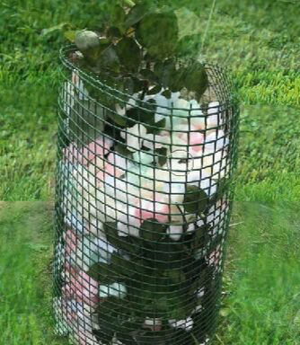

Прекрасно заполняют свободное место
Надежно фиксируют
Самый быстрый, простой, и эффективный способ утепления цветов (в десять раз быстрее по сравнению с другими)
Сертификат качества
Прекрасно заполняют свободное место
Надежно фиксируют
Пенопластовый
Утеплитель роз
Фасовка от 10 литров

надеть сетку на цветок (куст), прижав как можно ближе к земле и закрепитьсбоку хомутами.
Засыпать в сетку наполнитель.
Сверху надеть спанчбонд.
Закрепить спанчбонд вокруг растения.
как производитель предлагает утеплитель для цветов (всех видов роз), который позволит сохранить цветы от холода и повреждений, давая корневой системе растений возможность дышать
Данный утеплитель изготовлен из безопасного и легкого материала, который имеет амортизирующий эффект и хорошие теплоизоляционные свойства. Кроме того, он не крошится, не пахнет, не впитывает запахи и влагу, не меняет размеры при изменении влажности и температуры, не окисляет почву, не дает преть корневой системе и стеблю растения, может применяться неоднократно (многосезонно), а также совсем безвреден для срезанных растений. Это более быстрый, простой, и эффективный способ утепления цветов (в десять раз быстрее по сравнению с другими).
Цветпак-утеплитель для цветов (роз)